Last updated: 2022-08-17
Checks: 5 2
Knit directory: funcFinemapping/
This reproducible R Markdown analysis was created with workflowr (version 1.6.2). The Checks tab describes the reproducibility checks that were applied when the results were created. The Past versions tab lists the development history.
The R Markdown is untracked by Git. To know which version of the R Markdown file created these results, you’ll want to first commit it to the Git repo. If you’re still working on the analysis, you can ignore this warning. When you’re finished, you can run wflow_publish to commit the R Markdown file and build the HTML.
Great job! The global environment was empty. Objects defined in the global environment can affect the analysis in your R Markdown file in unknown ways. For reproduciblity it’s best to always run the code in an empty environment.
The command set.seed(20210404) was run prior to running the code in the R Markdown file. Setting a seed ensures that any results that rely on randomness, e.g. subsampling or permutations, are reproducible.
Great job! Recording the operating system, R version, and package versions is critical for reproducibility.
Nice! There were no cached chunks for this analysis, so you can be confident that you successfully produced the results during this run.
Using absolute paths to the files within your workflowr project makes it difficult for you and others to run your code on a different machine. Change the absolute path(s) below to the suggested relative path(s) to make your code more reproducible.
| absolute | relative |
|---|---|
| ~/projects/funcFinemapping/ | . |
Great! You are using Git for version control. Tracking code development and connecting the code version to the results is critical for reproducibility.
The results in this page were generated with repository version ab370da. See the Past versions tab to see a history of the changes made to the R Markdown and HTML files.
Note that you need to be careful to ensure that all relevant files for the analysis have been committed to Git prior to generating the results (you can use wflow_publish or wflow_git_commit). workflowr only checks the R Markdown file, but you know if there are other scripts or data files that it depends on. Below is the status of the Git repository when the results were generated:
Ignored files:
Ignored: .ipynb_checkpoints/
Ignored: analysis/.Rhistory
Ignored: analysis/PTR_m6A.nb.html
Ignored: analysis/build_annotations_for_single_cell_data.nb.html
Ignored: analysis/figure/
Ignored: analysis/lab4_prepare.nb.html
Ignored: analysis/ldsc_results.nb.html
Ignored: analysis/learn_archR.nb.html
Ignored: analysis/mtsplice_finemapping_results.nb.html
Ignored: analysis/results.nb.html
Ignored: analysis/snp_finemapping_results.nb.html
Ignored: analysis/splicing.nb.html
Ignored: analysis/susie_tutorial.nb.html
Untracked files:
Untracked: SCZ_pval_vs_MAF.png
Untracked: SNPs_categories,png
Untracked: SNPs_categories.png
Untracked: analysis/.ipynb_checkpoints/
Untracked: analysis/PTR_m6A.Rmd
Untracked: analysis/PTR_splicing_mtsplice.Rmd
Untracked: analysis/PTR_splicing_spliceAI.Rmd
Untracked: analysis/snp_finemapping_spliceAI_prior.Rmd
Untracked: bmi_locus1410.pdf
Untracked: code/.ipynb_checkpoints/
Untracked: code/.snakemake/
Untracked: code/Euro_LD_Chunks.RData
Untracked: code/Snakefile
Untracked: code/config.yaml
Untracked: code/environment.yml
Untracked: code/get_indiv_annotation_from_predictions.R
Untracked: code/ldsc.log
Untracked: code/ldsc.results
Untracked: code/ldsc_regression.sh
Untracked: code/make_joint_annotations.R
Untracked: code/make_plots.R
Untracked: code/out/
Untracked: code/run_ldsc.sh
Untracked: code/run_ldsc_with_bed.sh
Untracked: code/run_ldsc_with_bed_v2.sh
Untracked: code/run_susie.R
Untracked: code/run_susie_in_parallel.R
Untracked: code/run_torus.sh
Untracked: code/run_torus/
Untracked: code/sctype/
Untracked: code/split_vcf.sh
Untracked: code_backup/
Untracked: data/ScTypeDB_full.xlsx
Untracked: data/hg19_gtf_genomic_annots_ver2.gr.rds
Untracked: data/mmsplice_mtsplice_cutoffs.txt
Untracked: data/num_overlaps_finemapped_SNPs_and_ctcf.txt
Untracked: data/qqplot_SNPs_high_spliceAI.png
Untracked: data/qqplot_SNPs_high_spliceAI_scores_SCZ.png
Untracked: data/qqplot_SNPs_high_spliceAI_scores_aFib.png
Untracked: data/qqplot_SNPs_high_spliceAI_scores_allergy.png
Untracked: data/spliceAIandMAF.txt.gz
Untracked: data/torus_enrichment_novel_annot.est
Untracked: data/torus_joint_enrichment.est
Untracked: data/torus_joint_refined_enrichment.est
Untracked: enhancer_gene_feature.rmd
Untracked: fig1_panels.pdf
Untracked: fig2.pdf
Untracked: fig_panel2.pdf
Untracked: gene_mapping.pdf
Untracked: output/AAD/GMP_merge_stats.txt
Untracked: output/AAD/Wang2020_joint.results
Untracked: output/AAD/Wang2020_joint_T.results
Untracked: output/AAD/Wang2020_joint_tissueResT.results
Untracked: output/AAD/allergy/Ulirsch2019/GMP_merge_compare_old.est
Untracked: output/AAD/allergy/Ulirsch2019_disjoint_snps.sumstats
Untracked: output/AAD/allergy/Wang2020_T_subsets.est
Untracked: output/AAD/allergy/Wang2020_T_subsets_indiv.est
Untracked: output/AAD/allergy/Wang2020_T_tissueRes.est
Untracked: output/AAD/allergy/Wang2020_joint_T.results
Untracked: output/AAD/allergy/Wang2020_joint_tissueResT.results
Untracked: output/AAD/allergy/Wang2020_tissueResT.est
Untracked: output/AAD/allergy/torus_enrichment_CD4.est
Untracked: output/AAD/allergy/torus_enrichment_CD8.est
Untracked: output/AAD/allergy/torus_enrichment_non_tissueRes_T.est
Untracked: output/AAD/allergy/torus_enrichment_tissueMigraT.est
Untracked: output/AAD/allergy/torus_enrichment_tissueResT_C6.est
Untracked: output/AAD/allergy/torus_enrichment_tissueResT_C8.est
Untracked: output/AAD/allergy/torus_enrichment_tissueRes_T.est
Untracked: output/AAD/allergy/torus_enrichment_tissueResident_T_cells.est
Untracked: output/AAD/asthma_adult/Ulirsch2019/CD4_compare_old.est
Untracked: output/AAD/asthma_adult/Ulirsch2019/CD8_compare_old.est
Untracked: output/AAD/asthma_adult/Ulirsch2019/GMP_merge_compare_old.est
Untracked: output/AAD/asthma_adult/Wang2020_T_subsets.est
Untracked: output/AAD/asthma_adult/Wang2020_T_subsets_indiv.est
Untracked: output/AAD/asthma_adult/Wang2020_T_tissueRes.est
Untracked: output/AAD/asthma_adult/Wang2020_joint_T.results
Untracked: output/AAD/asthma_adult/Wang2020_joint_tissueResT.results
Untracked: output/AAD/asthma_adult/torus_enrichment_CD4.est
Untracked: output/AAD/asthma_adult/torus_enrichment_CD8.est
Untracked: output/AAD/asthma_adult/torus_enrichment_non_tissueRes_T.est
Untracked: output/AAD/asthma_adult/torus_enrichment_tissueMigraT.est
Untracked: output/AAD/asthma_adult/torus_enrichment_tissueResT_C6.est
Untracked: output/AAD/asthma_adult/torus_enrichment_tissueResT_C8.est
Untracked: output/AAD/asthma_adult/torus_enrichment_tissueRes_T.est
Untracked: output/AAD/asthma_adult/torus_enrichment_tissueResident_T_cells.est
Untracked: output/AAD/asthma_child/CD4_compare.est
Untracked: output/AAD/asthma_child/CD8_compare.est
Untracked: output/AAD/asthma_child/Ulirsch2019/GMP_merge_compare_old.est
Untracked: output/AAD/asthma_child/Ulirsch2019/torus_enrichment_CD4.est
Untracked: output/AAD/asthma_child/Ulirsch2019/torus_enrichment_CD8.est
Untracked: output/AAD/asthma_child/Wang2020_T_subsets.est
Untracked: output/AAD/asthma_child/Wang2020_T_subsets_indiv.est
Untracked: output/AAD/asthma_child/Wang2020_T_tissueRes.est
Untracked: output/AAD/asthma_child/Wang2020_joint_T.results
Untracked: output/AAD/asthma_child/Wang2020_joint_tissueResT.results
Untracked: output/AAD/asthma_child/torus_enrichment_CD4.est
Untracked: output/AAD/asthma_child/torus_enrichment_CD8.est
Untracked: output/AAD/asthma_child/torus_enrichment_non_tissueRes_T.est
Untracked: output/AAD/asthma_child/torus_enrichment_tissueMigraT.est
Untracked: output/AAD/asthma_child/torus_enrichment_tissueResT_C6.est
Untracked: output/AAD/asthma_child/torus_enrichment_tissueResT_C8.est
Untracked: output/AAD/asthma_child/torus_enrichment_tissueRes_T.est
Untracked: output/AAD/asthma_child/torus_enrichment_tissueResident_T_cells.est
Untracked: output/LDL_ukb_L10.gif
Untracked: output/LDL_ukb_L10.pdf
Untracked: output/background_SNPs_annotated_percent.txt
Untracked: output/ldsc
Untracked: output/locus_1452.gif
Untracked: output/locus_1452.pdf
Untracked: output/spliceAI_vs_MAF.png
Untracked: output/splicing/.ipynb_checkpoints/
Untracked: output/splicing/PTR_across_traits_annotations.results
Untracked: output/splicing/QQplot_mmsplice.png
Untracked: output/splicing/QQplot_mmsplice_top15.png
Untracked: output/splicing/QQplot_mmsplice_vs_mtsplice.png
Untracked: output/splicing/QQplot_mmsplice_vs_mtsplice_SCZ.png
Untracked: output/splicing/TSplice_scores_distribution.png
Untracked: output/splicing/header.txt
Untracked: output/splicing/mmsplice_vs_mtsplice_AA_heart.png
Untracked: output/splicing/mmsplice_vs_mtsplice_Hypothalamus_brain.png
Untracked: output/splicing/mmsplice_vs_mtsplice_LV_heart.png
Untracked: output/splicing/mmsplice_vs_mtsplice_across_tissues.png
Untracked: output/splicing/prior/
Untracked: output/splicing/scz_PTR_annotations.results
Untracked: output/splicing/scz_neuOCR_m6a_DMR.results
Untracked: output/splicing/scz_spliceAI0.03_hist.png
Untracked: output/splicing/scz_spliceAI0.03_scatterplot.png
Untracked: output/splicing/scz_spliceai_binary0.03.results
Untracked: output/splicing/torus_afib_spliceai.est
Untracked: output/splicing/torus_annotations_spliceai0.01.txt.gz
Untracked: output/splicing/torus_annotations_spliceai0.03.txt.gz
Untracked: output/splicing/torus_annotations_spliceai0.05.txt.gz
Untracked: output/splicing/torus_annotations_spliceai0.07.txt.gz
Untracked: output/splicing/torus_annotations_spliceai0.1.txt.gz
Untracked: output/splicing/torus_annotations_spliceai0.2.txt.gz
Untracked: output/splicing/torus_annotations_spliceai9.txt.gz
Untracked: output/splicing/torus_enrichment_joint_scz_mtsplice0.6_hypothalamus-brain.est
Untracked: output/splicing/torus_enrichment_joint_scz_spliceAI.est
Untracked: output/splicing/torus_spliceai0.01.enrichment
Untracked: output/splicing/torus_spliceai0.03.enrichment
Untracked: output/splicing/torus_spliceai0.05.enrichment
Untracked: output/splicing/torus_spliceai0.07.enrichment
Untracked: output/splicing/torus_spliceai0.1.enrichment
Untracked: output/splicing/torus_spliceai0.2.enrichment
Untracked: output/splicing/torus_zscores.txt.gz
Untracked: output/torus
Untracked: panel_figure2.pdf
Untracked: test.txt
Unstaged changes:
Deleted: .Rprofile
Modified: analysis/index.Rmd
Modified: analysis/lab4_prepare.Rmd
Modified: analysis/ldsc_PTR_results.Rmd
Deleted: output/AAD/Caldero2019_disjoint_snps.sumstats
Modified: output/AAD/allergy/Caldero2019_disjoint_snps.sumstats
Modified: output/AAD/allergy/Ulirsch2019/GMP_merge_compare.est
Modified: output/AAD/allergy/Wang2020_indiv.est
Modified: output/AAD/allergy/Wang2020_joint.results
Deleted: output/AAD/asthma/Caldero2019_diffDA_annot_percent.txt
Deleted: output/AAD/asthma/Caldero2019_stimuDA_annot_percent.txt
Deleted: output/AAD/asthma/celltype_specific_adult_lungs_torus.est
Deleted: output/AAD/asthma/diffe_adult_blood_torus.est
Deleted: output/AAD/asthma/joint_blood_immune_rest_vs_stimu.est
Deleted: output/AAD/asthma/joint_lung_vs_blood_immune_diff_torus.est
Deleted: output/AAD/asthma/joint_lung_vs_blood_immune_stimu_torus.est
Deleted: output/AAD/asthma/lung_clusters_dict.txt
Deleted: output/AAD/asthma/lung_clusters_info.txt
Deleted: output/AAD/asthma/stimu_adult_blood_torus.est
Deleted: output/AAD/asthma/torus_enrichment_all_rest.est
Deleted: output/AAD/asthma/torus_enrichment_all_stimulated.est
Deleted: output/AAD/asthma/zhang2021_annot_percent.txt
Deleted: output/AAD/asthma/zhang2021_cell_type_overlaps.txt
Deleted: output/AAD/asthma/zhang2021_peaks_per_celltype.txt
Modified: output/AAD/asthma_adult/Ulirsch2019/CD4_compare.est
Modified: output/AAD/asthma_adult/Ulirsch2019/CD8_compare.est
Deleted: output/AAD/asthma_adult/Ulirsch2019/GMP_merge_compare.est
Modified: output/AAD/asthma_adult/Wang2020_indiv.est
Modified: output/AAD/asthma_adult/Wang2020_joint.results
Modified: output/AAD/asthma_child/Ulirsch2019/GMP_merge_compare.est
Modified: output/AAD/asthma_child/Wang2020_indiv.est
Modified: output/AAD/asthma_child/Wang2020_joint.results
Deleted: output/asthma/Caldero2019_diffDA_annot_percent.txt
Deleted: output/asthma/Caldero2019_stimuDA_annot_percent.txt
Deleted: output/asthma/celltype_specific_adult_lungs_torus.est
Deleted: output/asthma/diffe_adult_blood_torus.est
Deleted: output/asthma/joint_lung_vs_blood_immune_diff_torus.est
Deleted: output/asthma/joint_lung_vs_blood_immune_stimu_torus.est
Deleted: output/asthma/lung_clusters_dict.txt
Deleted: output/asthma/lung_clusters_info.txt
Deleted: output/asthma/stimu_adult_blood_torus.est
Deleted: output/asthma/zhang2021_annot_percent.txt
Deleted: output/asthma/zhang2021_cell_type_overlaps.txt
Deleted: output/asthma/zhang2021_peaks_per_celltype.txt
Note that any generated files, e.g. HTML, png, CSS, etc., are not included in this status report because it is ok for generated content to have uncommitted changes.
There are no past versions. Publish this analysis with wflow_publish() to start tracking its development.
The general procedures for functional fine-mapping are (1) compute the causal probability for each variant from association statsitics and annotations (TORUS) and (2) perform fine-mapping with prior knowledge obtained in the first step (SuSiE).
Annotations
Procedure
Torus enrichment estimates 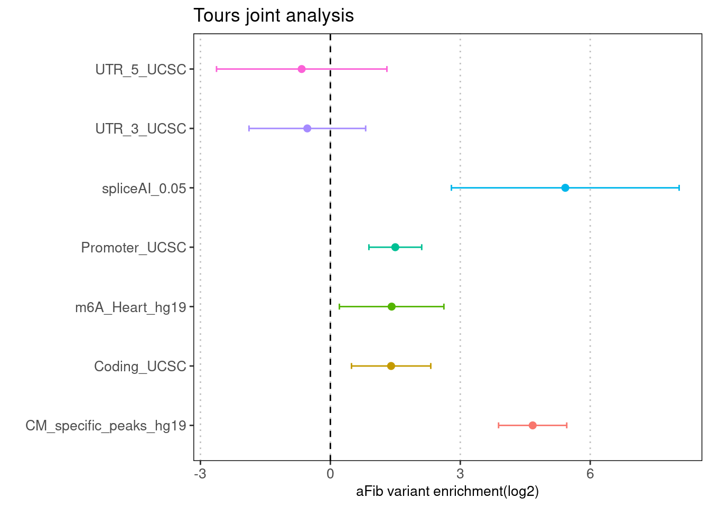
Sanity check: -log10(p-values) against susie PIPs
No red flags for the fine-mapping run using both uniform and functional priors at L=1. Most SNPs with high PIPs have low p-values. 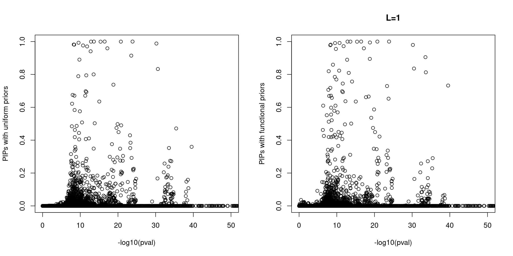
When run at L=2, we see few spuriously prioritized SNPs with non-significant p-values and a number of SNPs with elevated PIPs at less significant p-values. A larger fraction of SNPs with significant p-values were prioritized with functional priors.
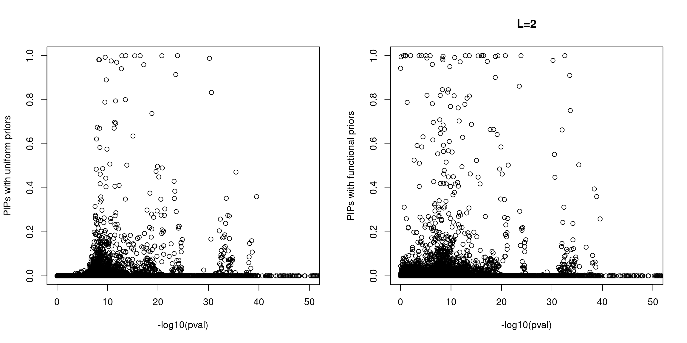
Compare PIPs between uniform and functional priors
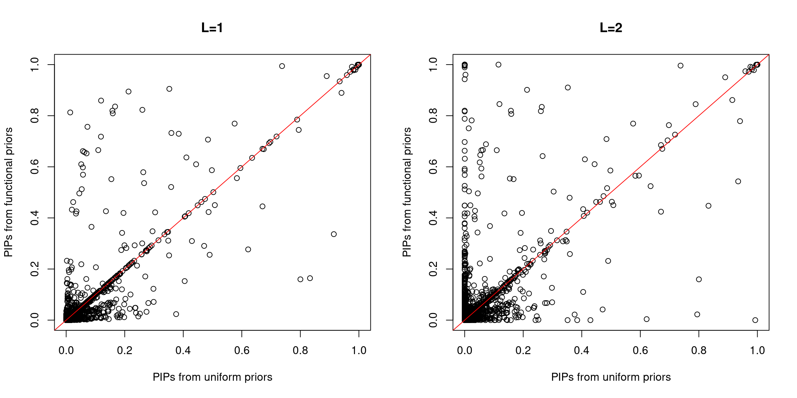 A larger fraction of SNPs lie above the diagonal line, indicating higher PIPs assigned to SNPs with functional priors. Same trend for both L=1 and L=2.
Compare the sizes of credible sets
Uniform priors
plot_cs_size(uniform.L1)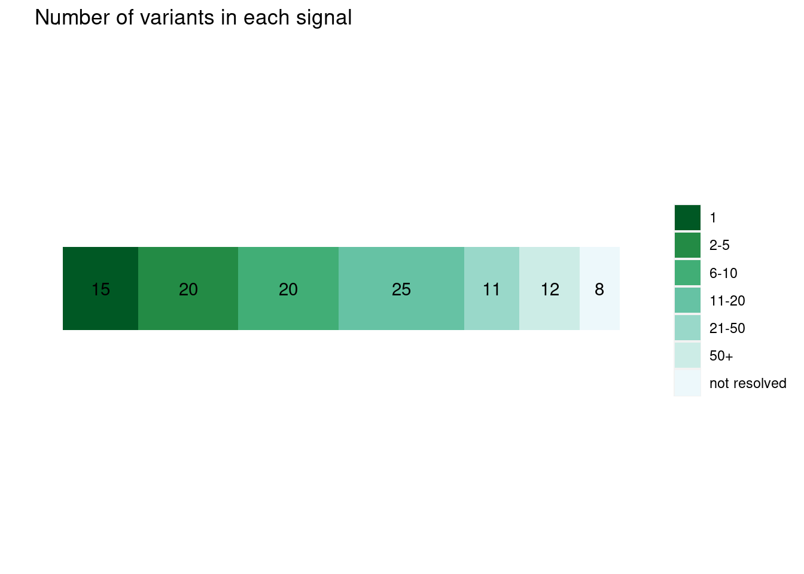 run with functional prior at L=1 run with functional prior at L=2 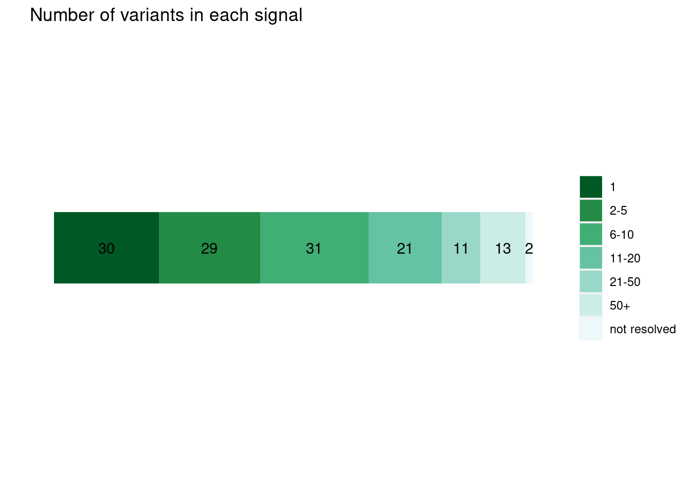 With functional priors run at L=2, we observe smaller credible sets and less resolved cases.
Distributions of spliceAI scores for SNPs in credible sets
L = 1
###load spliceAI scores###
colnames(annot.L1)[which(colnames(annot.L1)=="rsID")]<-"SNP"
annot.L1<-left_join(annot.L1, scores[, c("SNP", "spliceAI_varPred")], by="SNP")
annot.L1[,"susie_pip.unif"]<-uniform.L1[,"susie_pip"]
annot.cs<-annot.L1[annot.L1$cs==1, ]
hist(annot.cs$spliceAI_varPred[annot.cs$spliceAI_varPred>0], main="", xlab="SNPs in credible sets with non-zero spliceAI scores")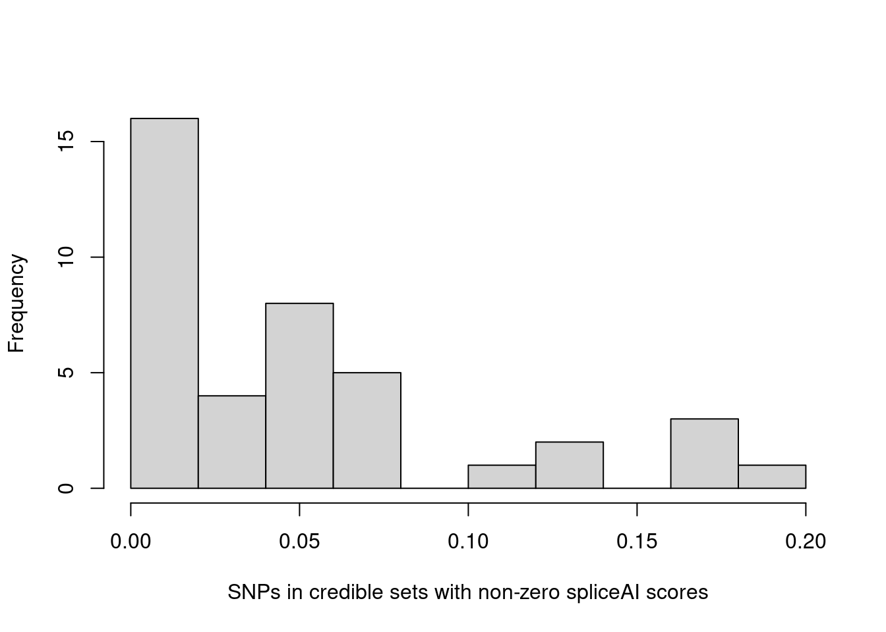 The majority of SNPs in credible sets have zero spliceAI scores. Here we plotted the distribution of non-zero spliceAI scores for SNPs in credible sets.
snp pval zscore locus cs_size susie_pip
386899 13:113833499:A:G:rs486407 1.488e-07 -5.238095 1323 71 0.08457434
455599 17:7453919:T:C:rs12940684 7.014e-08 -5.430556 1490 7 0.20622422
462263 17:38062217:T:C:rs2305479 3.276e-10 6.318182 1506 17 0.43238643
121351 3:111589772:A:C:rs1282932 8.805e-15 -7.800000 346 22 0.75659812
358139 12:57119236:A:G:rs3214051 1.398e-10 6.391304 1214 18 0.23236096
49118 2:61405795:T:G:rs2600665 7.965e-08 -5.382353 173 104 0.02351085
379733 12:133142411:C:T:rs6560884 4.974e-07 -5.032609 1261 10 0.46202750
213142 6:88032402:A:C:rs2257153 1.419e-09 -6.014493 690 180 0.02215107
462198 17:38028634:T:G:rs11557467 1.237e-10 6.454545 1506 17 0.41703764
472083 17:76757296:A:C:rs8076588 4.457e-08 5.447761 1527 20 0.55177380
Coding_UCSC_d Promoter_UCSC_d UTR_3_UCSC_d UTR_5_UCSC_d spliceAI_varPred
386899 0 0 0 0 0.19
455599 0 1 0 0 0.18
462263 1 1 0 1 0.18
121351 0 0 0 0 0.17
358139 1 1 0 1 0.14
49118 1 1 0 1 0.13
379733 0 0 0 0 0.12
213142 0 1 0 0 0.08
462198 1 0 0 0 0.08
472083 0 0 0 0 0.08Examine the results for L=2 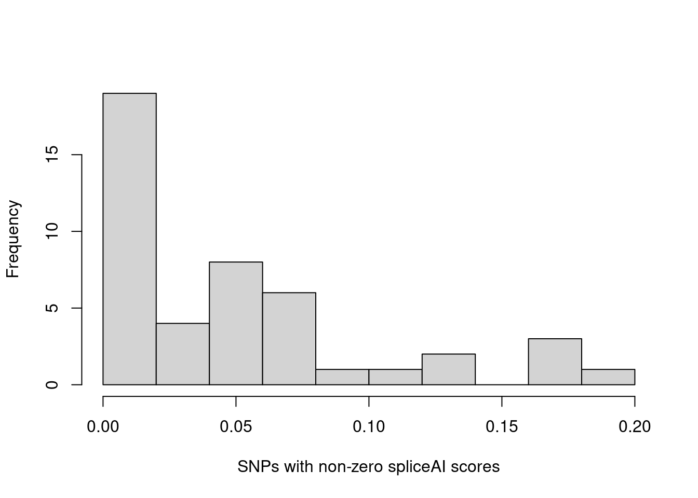
Compared with the run at L=1, the fine-mapping results at L=2 overall gives smaller credible sets. For example, 10 SNPs in the locus 1261 were captured in one credible set at L=1, but 3 SNPs were captured at L=2. Notably, since the coverage cutoff was set to be the same, the secondary signals may not be captured. We may need to lower the cutoff for capturing the secondary signals.
snp pval zscore locus cs_size susie_pip
1 13:113833499:A:G:rs486407 1.488e-07 -5.238095 1323 71 0.08457434
2 13:113833499:A:G:rs486407 1.488e-07 -5.238095 1323 71 0.08457434
3 17:7453919:T:C:rs12940684 7.014e-08 -5.430556 1490 7 0.20622422
4 17:7453919:T:C:rs12940684 7.014e-08 -5.430556 1490 7 0.20622422
5 17:38062217:T:C:rs2305479 3.276e-10 6.318182 1506 17 0.43238643
6 17:38062217:T:C:rs2305479 3.276e-10 6.318182 1506 17 0.43238643
7 3:111589772:A:C:rs1282932 8.805e-15 -7.800000 346 22 0.75659812
8 12:57119236:A:G:rs3214051 1.398e-10 6.391304 1214 18 0.23236096
9 12:57119236:A:G:rs3214051 1.398e-10 6.391304 1214 18 0.23236096
10 12:57119236:A:G:rs3214051 1.398e-10 6.391304 1214 18 0.23236096
11 12:133142411:C:T:rs6560884 4.974e-07 -5.032609 1261 10 0.46202750
12 6:88032402:A:C:rs2257153 1.419e-09 -6.014493 690 180 0.02215107
13 6:88032402:A:C:rs2257153 1.419e-09 -6.014493 690 180 0.02215107
14 6:88032402:A:C:rs2257153 1.419e-09 -6.014493 690 180 0.02215107
15 6:88032402:A:C:rs2257153 1.419e-09 -6.014493 690 180 0.02215107
16 17:38028634:T:G:rs11557467 1.237e-10 6.454545 1506 17 0.41703764
17 17:76757296:A:C:rs8076588 4.457e-08 5.447761 1527 20 0.55177380
18 6:87887985:C:A:rs7767449 2.433e-09 5.984848 690 180 0.03200709
spliceAI_varPred category gene_name
1 0.19 introns PCID2
2 0.19 splice_junctions PCID2
3 0.18 introns TNFSF12
4 0.18 introns TNFSF12-TNFSF13
5 0.18 exons GSDMB
6 0.18 splice_junctions GSDMB
7 0.17 introns PHLDB2
8 0.14 exons NACA
9 0.14 UTRs NACA
10 0.14 splice_junctions NACA
11 0.12 introns FBRSL1
12 0.08 introns GJB7
13 0.08 introns SMIM8
14 0.08 splice_junctions SMIM8
15 0.08 splice_junctions SMIM8
16 0.08 exons ZPBP2
17 0.08 introns CYTH1
18 0.07 introns ZNF292Check the distribution of p-values and PIPs
The snp rs486407 was prioritized among this locus, which contains a large number of SNPs. This SNP has the highest prediction scores, which is expected as it locates in a splice junction. It is predicted to alter the variant at 6bp upstream by increasing its use as a splice donor by 19%. This SNPs lie in between exon 13 and 14 of gene PCID2, and has been found to be a splice junction in one humen ETS. PCID2 encodes for a component of the TREX-2 complex, which regulates mRNA export from the nucleus. 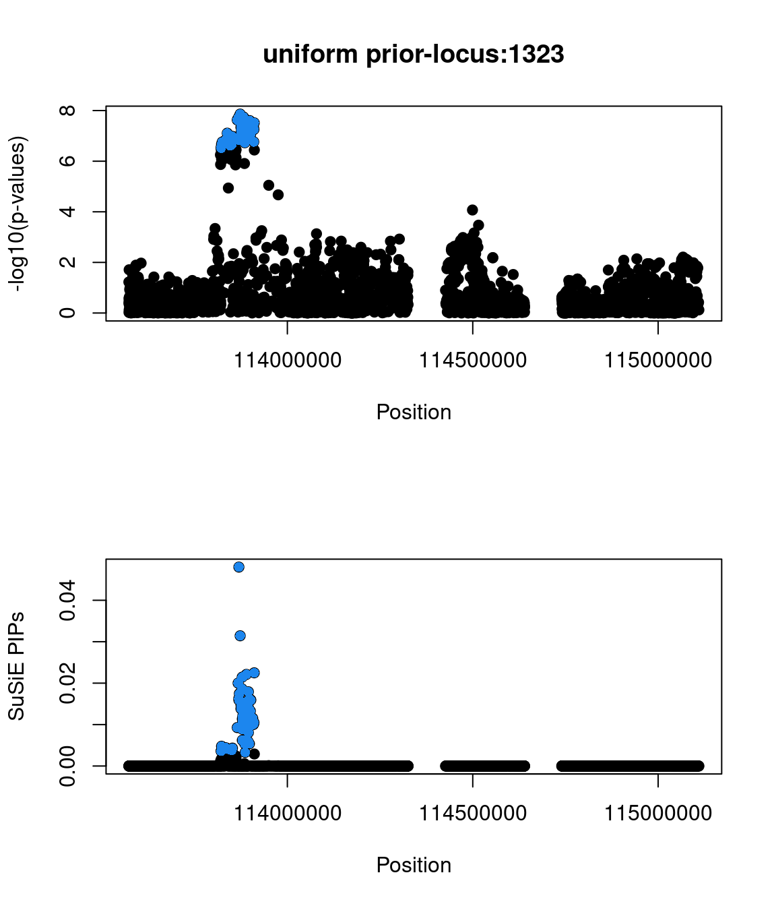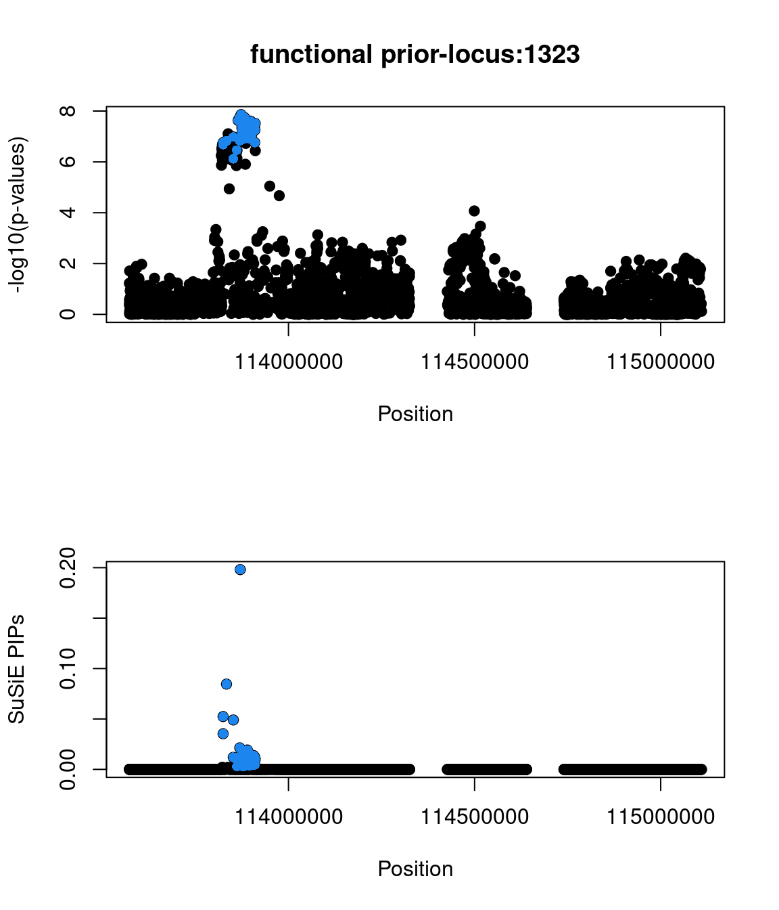 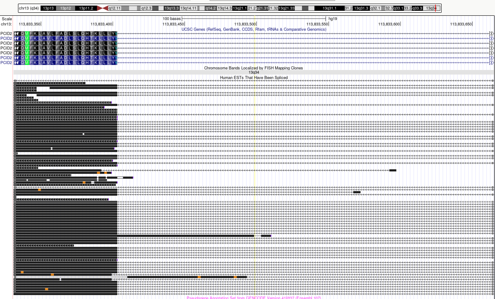
The SNP rs6560884 was proritized than other SNPs with functional prior at L=1 and further prioritized at L=2 due to its predicted splicing effects (spliceAI=0.12).
Based on spliceAI prediction, this SNP increases the probability of the variant at 2 bp downstream used as a splice donor by 12%. This variant is located in the intron region of Fibrosin Like 1 gene (FBRL1), which functions to enable RNA binding activity. 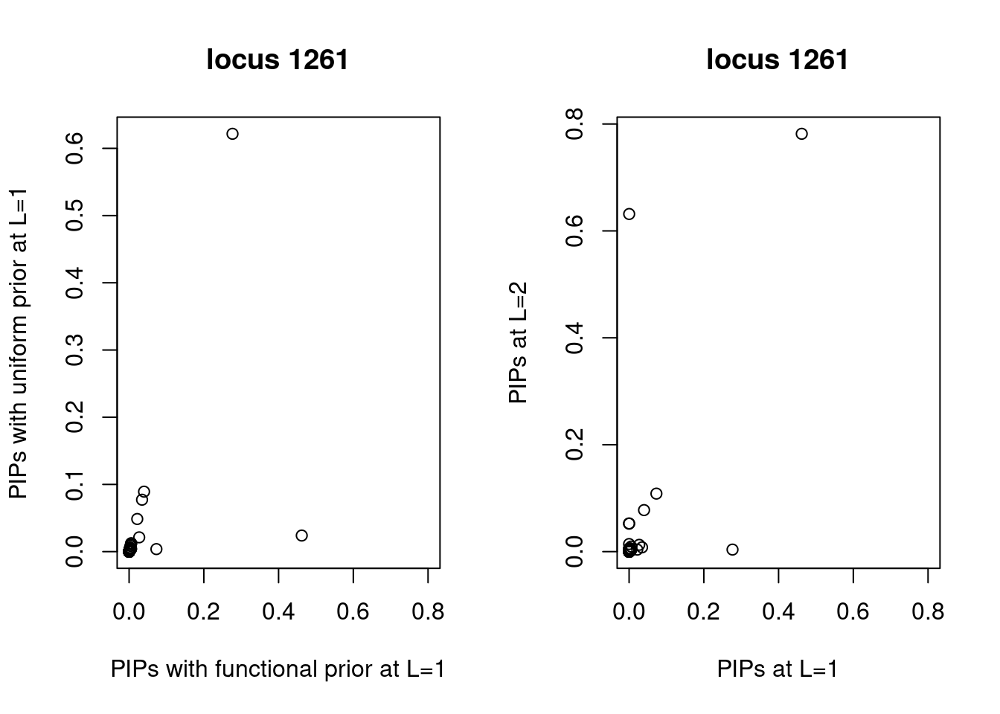
Check the distribution of p-values and PIPs
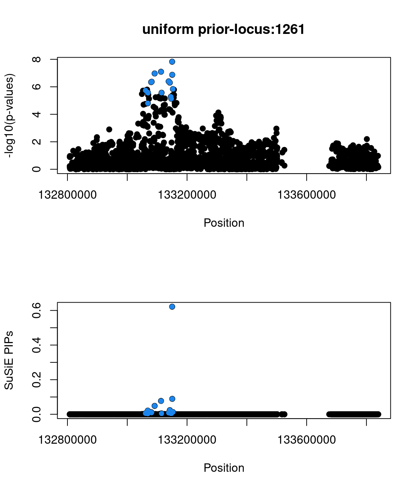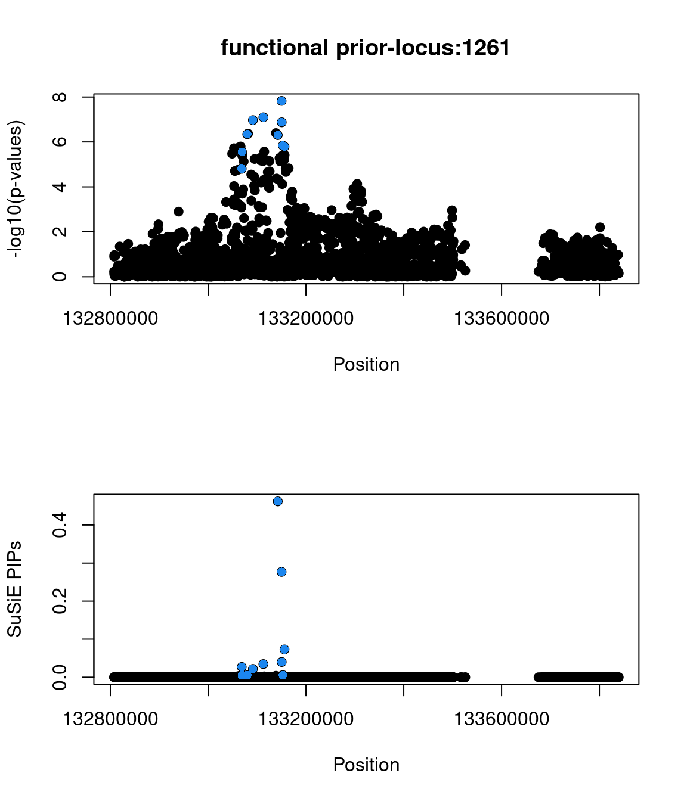
genome browser
Check the distribution of p-values and PIPs
Two SNPs in this locus were prioritized, which are rs9899183 & rs12940684. Though the first one has higher PIP due to higher z score, the second one were predicted to alter the variant at 5bp downstream by increasing its use as a splice acceptor by 18%. These two SNPs are located in the intron regions between exon 1 and exon2 of gene TNFSF12, which encodes for a cytokine that belongs to the TNF superfamily. 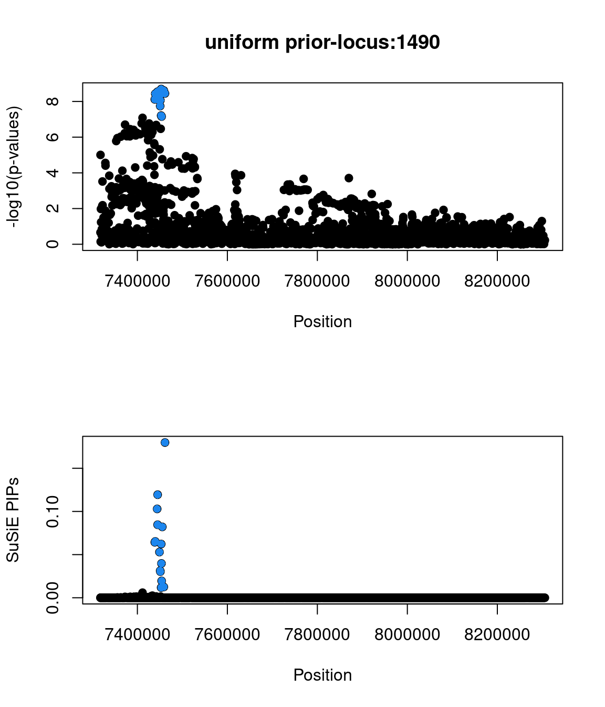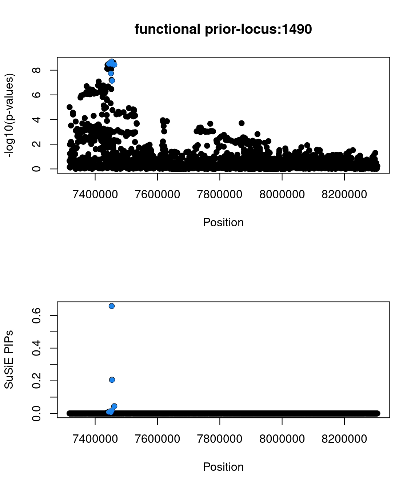 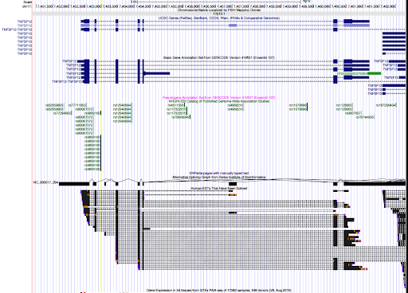
sessionInfo()R version 4.0.4 (2021-02-15)
Platform: x86_64-pc-linux-gnu (64-bit)
Running under: Scientific Linux 7.4 (Nitrogen)
Matrix products: default
BLAS/LAPACK: /software/openblas-0.3.13-el7-x86_64/lib/libopenblas_haswellp-r0.3.13.so
locale:
[1] LC_CTYPE=en_US.UTF-8 LC_NUMERIC=C
[3] LC_TIME=en_US.UTF-8 LC_COLLATE=en_US.UTF-8
[5] LC_MONETARY=en_US.UTF-8 LC_MESSAGES=en_US.UTF-8
[7] LC_PAPER=en_US.UTF-8 LC_NAME=C
[9] LC_ADDRESS=C LC_TELEPHONE=C
[11] LC_MEASUREMENT=en_US.UTF-8 LC_IDENTIFICATION=C
attached base packages:
[1] parallel stats4 stats graphics grDevices utils datasets
[8] methods base
other attached packages:
[1] RColorBrewer_1.1-2 GenomicRanges_1.42.0 GenomeInfoDb_1.26.7
[4] IRanges_2.24.1 S4Vectors_0.28.1 BiocGenerics_0.36.1
[7] ggplot2_3.3.3 bigsnpr_1.9.11 bigstatsr_1.5.6
[10] susieR_0.12.16 dplyr_1.0.4 data.table_1.14.2
loaded via a namespace (and not attached):
[1] Biobase_2.50.0 MatrixGenerics_1.2.1
[3] sass_0.3.1 jsonlite_1.7.2
[5] foreach_1.5.1 bslib_0.2.4
[7] assertthat_0.2.1 mixsqp_0.3-43
[9] highr_0.8 Rsamtools_2.6.0
[11] GenomeInfoDbData_1.2.4 yaml_2.2.1
[13] pillar_1.5.0 lattice_0.20-41
[15] glue_1.6.1 digest_0.6.27
[17] promises_1.2.0.1 XVector_0.30.0
[19] colorspace_2.0-2 cowplot_1.1.1
[21] htmltools_0.5.1.1 httpuv_1.5.5
[23] Matrix_1.4-0 plyr_1.8.6
[25] XML_3.99-0.5 pkgconfig_2.0.3
[27] bigparallelr_0.3.2 zlibbioc_1.36.0
[29] purrr_0.3.4 scales_1.1.1
[31] later_1.1.0.1 BiocParallel_1.24.1
[33] git2r_0.28.0 tibble_3.0.6
[35] generics_0.1.0 farver_2.1.0
[37] ellipsis_0.3.2 SummarizedExperiment_1.20.0
[39] withr_2.4.3 cli_3.2.0
[41] magrittr_2.0.1 crayon_1.4.1
[43] evaluate_0.14 bigassertr_0.1.5
[45] fs_1.5.0 fansi_1.0.2
[47] doParallel_1.0.16 tools_4.0.4
[49] lifecycle_1.0.0 matrixStats_0.58.0
[51] stringr_1.4.0 plyranges_1.10.0
[53] munsell_0.5.0 bigsparser_0.6.0
[55] DelayedArray_0.16.3 irlba_2.3.3
[57] Biostrings_2.58.0 compiler_4.0.4
[59] jquerylib_0.1.3 rlang_1.0.1
[61] grid_4.0.4 RCurl_1.98-1.6
[63] iterators_1.0.13 rstudioapi_0.13
[65] bitops_1.0-6 labeling_0.4.2
[67] rmarkdown_2.7 gtable_0.3.0
[69] codetools_0.2-18 flock_0.7
[71] DBI_1.1.1 reshape_0.8.8
[73] R6_2.5.1 GenomicAlignments_1.26.0
[75] rtracklayer_1.50.0 knitr_1.31
[77] utf8_1.2.2 workflowr_1.6.2
[79] rprojroot_2.0.2 stringi_1.5.3
[81] Rcpp_1.0.8 vctrs_0.3.8
[83] tidyselect_1.1.1 xfun_0.21